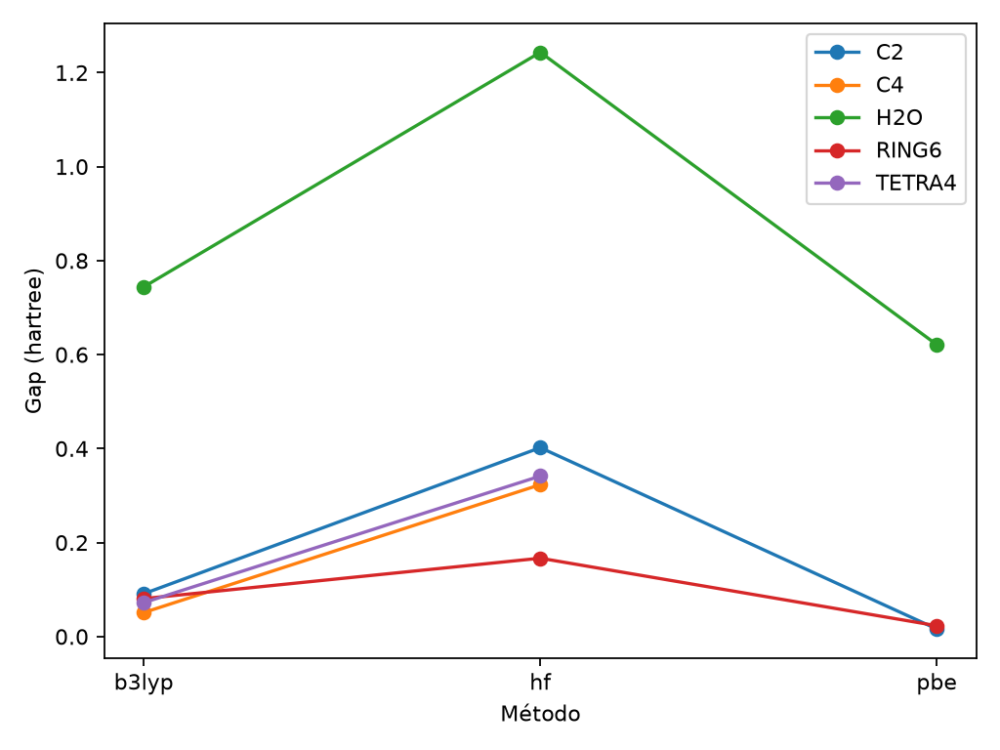

A — Afirmação
O modelo calcula diferenças eletrônicas entre sistemas moleculares pequenos.
B — Base
Usamos PySCF, geometria explícita, base STO-3G e métodos HF/DFT registrados.
Este site explica, passo a passo, o estudo do repositório. A ideia é simples: fornecemos uma molécula imaginada, usamos leis da física para estimar seu comportamento e comparamos os resultados.
É um laboratório virtual seguro. Ele calcula modelos pequenos de moléculas de carbono e água. O programa não transforma cinzas em diamante, não mede carbono-14 e não constrói uma bateria.
Energia eletrônica, orbitais, cargas aproximadas e diferença entre níveis de energia.
Que uma molécula pequena seja grafite, diamante ou uma fonte de energia real.
Um modelo pequeno é mais barato, repetível e fácil de ensinar, testar e criticar.
Pergunta: como diferentes modelos matemáticos — HF, PBE e B3LYP — estimam propriedades eletrônicas de pequenas estruturas de carbono usando a mesma base STO-3G?
Em linguagem Feynman: se trocarmos a “regra de cálculo”, o retrato eletrônico da molécula muda?
Tradução: o computador não “descobre a verdade” sozinho. Ele resolve uma aproximação definida por nós e devolve números que precisam ser conferidos.
Imagina cada elétron sentindo um campo médio criado pelos demais. É uma referência rápida, mas simplifica a interação entre elétrons.
É um funcional de densidade. Em vez de acompanhar cada elétron detalhadamente, trabalha com a densidade eletrônica.
É outro funcional DFT, com uma combinação diferente de termos. Comparar com PBE mostra a sensibilidade do resultado ao modelo.
É a “régua” matemática usada para representar orbitais. A régua é pequena e econômica, mas não descreve tudo.
| Objeto | Imagem mental | O que perguntamos |
|---|---|---|
| H₂O | Molécula de água | O pipeline funciona em uma molécula conhecida? |
| C₂ | Dois átomos de carbono | Como a ligação altera os níveis eletrônicos? |
| C₄ linear | Quatro carbonos em linha | O tamanho e a geometria mudam o gap? |
| C₆ anel | Seis carbonos formando um anel | Uma forma cíclica produz outra distribuição? |
| C₄ tetraédrico | Quatro carbonos em 3D | Uma geometria espacial altera a comparação? |
Imagine uma escada. O elétron ocupa um degrau preenchido. O próximo degrau vazio é o LUMO. A distância entre eles é o gap.
Diferenças de estrutura eletrônica entre modelos. Um gap calculado não é automaticamente tensão, corrente ou potência de uma bateria.

Abrir tabela original dos resultados
O modelo calcula diferenças eletrônicas entre sistemas moleculares pequenos.
Usamos PySCF, geometria explícita, base STO-3G e métodos HF/DFT registrados.
Comparamos sistemas e métodos por energia, HOMO, LUMO, gap e convergência.
Não extrapolamos os resultados para materiais periódicos, diamantes, baterias ou radioatividade.
Esse formato reduz exageros: cada frase precisa mostrar o que foi dito, em que se baseia, com o que foi comparado e onde a conclusão para.
Regra de segurança: o repositório não instrui coleta, concentração, cristalização ou manipulação de material radioativo.
Molécula: grupo pequeno de átomos.
Orbital: região matemática onde é mais provável encontrar um elétron.
DFT: método que descreve o sistema pela densidade dos elétrons.
Convergência: sinal de que o cálculo parou porque encontrou uma solução estável dentro dos critérios definidos.
Artefato: arquivo produzido pelo estudo, como JSON, CSV, PNG ou PDF.